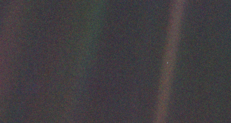

故事的开始
这是一个非标准工科男的一片净土，这里欢迎那些在乎我和我在乎的人。
社交媒体是个奇怪的东西。
虽然我是社交媒体的资深用户，但我至今都没能把“渴望别人的关注”和“分享自己的喜悦”这两个性质不同的概念分清楚。有的时候想要把生活的一点一滴都放在朋友圈里，有的时候又丝毫不想让别人知道我在干嘛，寻求一种“深藏功与名”的独特感……
有的时候发现，你所谓的朋友其实脱离不了人类喜欢看热闹的本质，在你痛苦不堪的时候就他妈知道冷眼旁观、顺带歪曲一下他人的议论再传给别人；一瞬之后又看到，有人在默默在乎你，也是在别人冷眼旁观的同一个时候拉了你一把；回头一看，原来还有人用尽一生把你送出去、让你飞起来的同时关心你的一切……核酸、肽和激素组成了几十亿人，但也是这些核算、肽和激素成就了在乎与不在乎、幸福与不幸福的天壤地别的差距。
所以我开辟了这一片净土，叫做Bluedot and Footprint（蓝点和脚印，取了个好听的中文名叫“一点一步”），蓝点就是旅行者号在几十亿公里外拍下的地球（“黯淡蓝点”），脚印就是尼尔•阿姆斯特朗在月球上留下的第一个脚印。我愿看到人类的伟大和渺小，愿在渺小、有限的人类躯体中成就生命的伟大。
这是一个非标准工科男的一片净土，这里欢迎那些在乎我和我在乎的人。
文/CYX